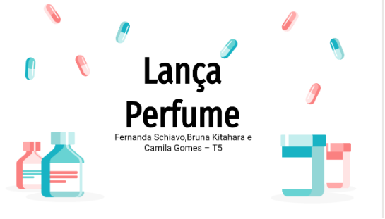
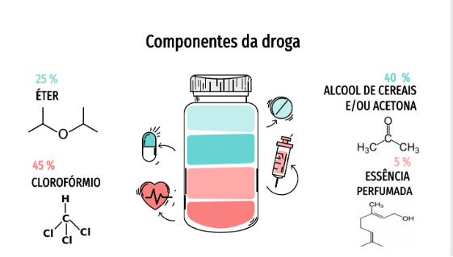

Ciências da Natureza
Neste trabalho tínhamos como objetivo realizar uma apresentação no power point sobre as funções orgânicas e inorgânicas das drogas ilícitas e licitas. Utilizando os conhecimentos que obtivemos durantes as aulas de Física, Química e Biologia, para a realização do mesmo. Escolhemos o tema Lança Perfume (mais conhecido como Loló).
